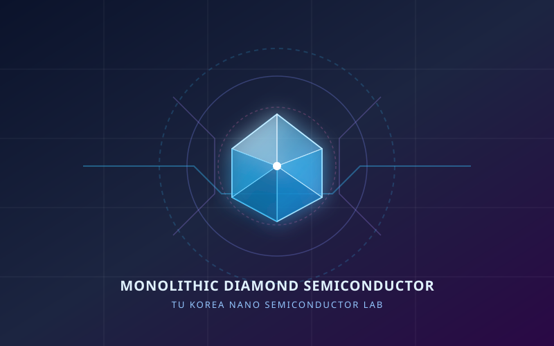
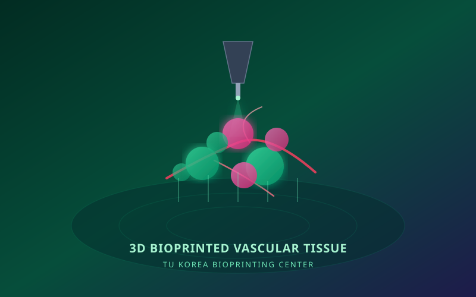

한국공학대학교 대표 연구 성과 Highlights
차세대 반도체, 바이오 장기, 제조 AI, 로봇 및 모빌리티까지 기술 목적에 최적화된 연구 그래픽과 함께 살펴보세요.

세계 최초 단결정 다이아몬드 Monolithic 트랜지스터 구현
이종성장 단결정 다이아몬드 웨이퍼 상에 E-모드와 D-모드를 단일 칩에 집적하는 데 세계 최초로 성공. 극한 환경 및 우주·고출력 전기차 전력반도체 원천기술 확보 및 해외 특허 출원.

혈관 구조 내포 체적 조직체 및 망상융선 인공피부 모델
생체 모사 미세조직체 조립을 통한 혈관화 대형 조직체 제작 기술 개발. 의약품 스크리닝 및 동물실험 대체 인공장기 모델링으로 권위 학술지 논문 게재.

반월·시화 국가산단 자율제조 AX 오픈랩 실증 허브
중소 제조기업의 설비 가동과 공정 데이터를 AI로 분석·예지보전하고, 디지털 트윈 시뮬레이션을 통해 시제품 개발 기간 50% 단축 및 생산성 혁신 지원.

인공지능 기반 첨단 반도체 설비 건전성 진단 및 로봇 제어
생산 공정 중 미세 진동 및 결함을 사전 예측하는 딥러닝 기반 PHM(고장예지 및 건전성 관리) 알고리즘을 구축하여 한국생산제조학회 최고 영예 백암논문상 수상.

AI 레이저 스펙클 노이즈 저감 & OS 복구 솔루션 민간 이전
과기정통부 지원을 통해 대학 자체 보유 특허 3건을 산업체에 이전. 성과연동 추가 기술료를 포함한 성공적인 상용화 R&D 비즈니스 모델 창출.

전동화 E-파워트레인 고효율 열관리 및 인버터 시스템
전기차 배터리 열폭주 방지 제어 기술과 SiC/GaN 전력반도체 적용 인버터의 전력변환 효율을 98% 이상으로 끌어올리는 차세대 친환경 모빌리티 구동계 개발.